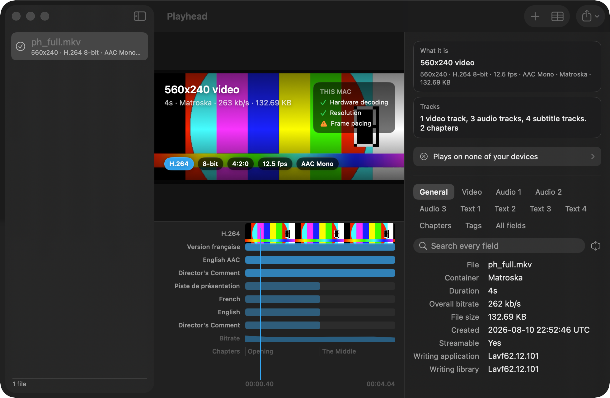
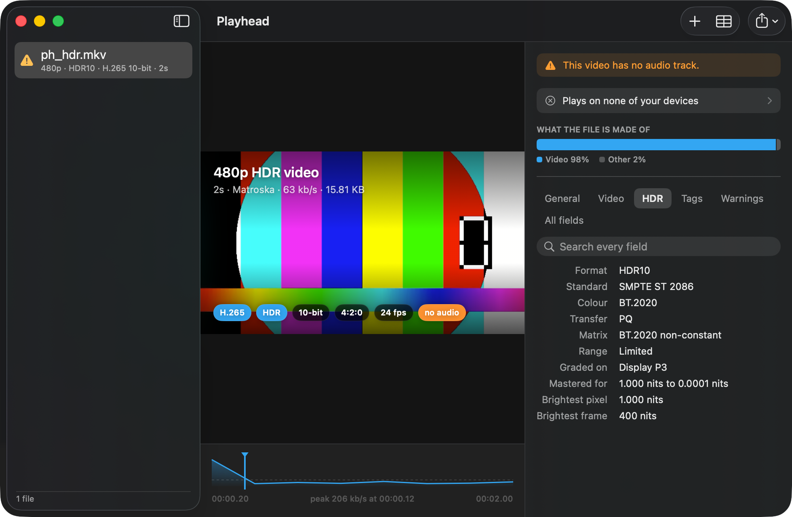
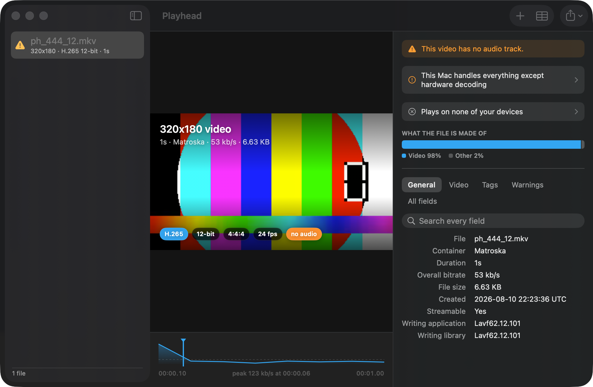
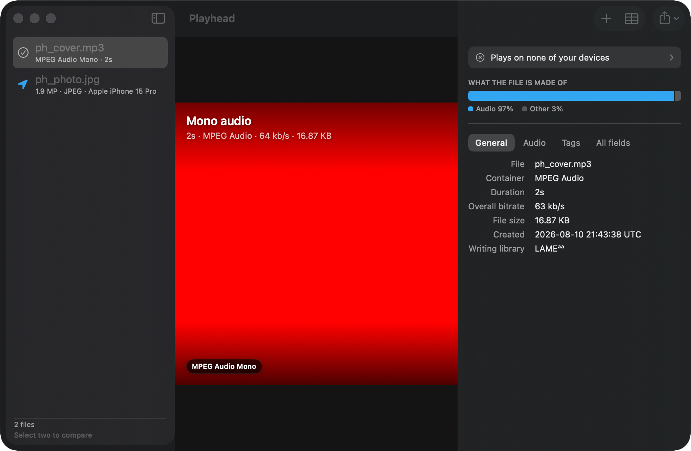

Un instrument de verificare a fișierelor media pentru Mac și iPhone care citește fișierele pe care QuickTime nu le poate deschide și apoi îți explică ce înseamnă fiecare dintre ele.
Obține Playhead, $0.99 macOS 14 sau o versiune ulterioară, iOS 17 sau o versiune ulterioară. O singură plată, fără abonament.Dacă apeși tasta spațiu pe un fișier Matroska, Finder nu reacționează. QuickTime îl respinge categoric. Instrumentele care îl citesc returnează trei sute de câmpuri și te lasă să descoperi singur care dintre ele sunt relevante.
Playhead citește fișierul folosind aceeași bibliotecă pe care o folosesc profesioniștii, apoi răspunde la întrebarea pe care ai pus-o de fapt: ce este asta, se va reda și are vreo problemă.

O listă îți spune că un film are douăsprezece piste de subtitrare. Nu îți poate spune că una dintre ele apare timp de nouăzeci de secunde la mijloc, ceea ce caracterizează o pistă narativă forțată, sau că a doua pistă audio se oprește la genericul de final.
Playhead plasează fiecare pistă pe un singur ceas: imaginea sub formă de peliculă de film, fiecare pistă audio având propriul titlu, fiecare pistă de subtitrare fiind plasată exact acolo unde apare în realitate.
Majoritatea instrumentelor indică formatul ca fiind „SMPTE ST 2086” și menționează denumirea pe care o recunoașteți într-un câmp separat. Playhead începe cu HDR10 sau Dolby Vision, precizează la ce format revine un player care nu le suportă și transformă datele de masterizare în valori de luminozitate ușor de înțeles: monitorul pe care a fost calibrat, cel mai luminos pixel, cel mai luminos cadru.


Alte instrumente fac presupuneri pe baza unor reguli precum „formatul 10-bit 4:2:2 nu dispune, de obicei, de decodare hardware”. Astfel de reguli sunt eronate pe unele mașini încă din ziua în care sunt formulate.
Playhead transmite configurația codecului specific fișierului tău către VideoToolbox și interoghează direct Mac-ul tău, astfel încât răspunsul să țină cont de profilul, adâncimea și crominanța exacte ale fișierului pe care îl ai în față. De asemenea, verifică rata de cadre în raport cu rata de reîmprospătare a ecranului tău și dacă ecranul tău poate afișa efectiv HDR.
Deschideți un fișier JPEG, HEIC sau RAW, iar Playhead citește informațiile despre aparatul foto, obiectivul, obturatorul, diafragma și ISO, împreună cu câmpurile de drepturi de autor și legendă.
Dacă fotografia conține încă coordonatele locului în care a fost făcută, Playhead îți va indica acest lucru în mod clar, înainte să o distribui cuiva.

Puneți o versiune web lângă o copie de pe disc și observați doar diferențele.
O singură căutare acoperă întregul fișier, nu doar fila pe care o aveți deschisă.
Orice valoare, orice câmp, un rezumat de o singură linie sau un raport complet în text simplu pentru o postare pe forum.
JSON, XML, EBUCore, CSV, Markdown și text simplu.
Apăsați tasta spațiu pe un fișier Matroska din Finder și vedeți ce conține.
Verificați cu Playhead, fără a deschide mai întâi aplicația.
Partajează un videoclip din secțiunea „Fișiere” și obține răspunsul fără a părăsi foaia de calcul.
Grupurile selectate sunt o facilitate. Setul complet este la doar o filă distanță.
Playhead citește fișierele de pe Mac sau iPhone și nu face nimic altceva. Fără cont, fără telemetrie, fără solicitări de rețea, fără analize. Fișierele media nu părăsesc niciodată dispozitivul pe care se află deja, deoarece nu există niciun server către care să fie transmise.
Playhead citește aceleași date, folosind aceeași bibliotecă de bază, și păstrează toate câmpurile disponibile. Diferența constă în ceea ce se întâmplă în continuare: descrie conținutul fișierului într-o propoziție, afișează piesele pe o cronologie și răspunde la întrebarea dacă fișierul va putea fi redat pe computerul pe care îl folosiți. MediaInfo este gratuit și excelent la colectarea informațiilor; Playhead se concentrează pe înțelegerea acestora.
Matroska, MP4, QuickTime, WebM, AVI, MPEG-TS, Ogg, FLAC, WAV, MP3 și multe altele, plus imagini statice, inclusiv JPEG, PNG, HEIC, TIFF și fișiere raw. Cadrele sunt extrase pentru H.264, H.265, AV1, VP8 și VP9.
Nu. Playhead deschide fișierele în mod „doar citire” și nu scrie niciodată în ele.
Da. Playhead este o achiziție universală, așa că, odată cumpărată, acoperă atât Mac-ul, cât și iPhone-ul și iPad-ul.
Nu se bazează doar pe stiva media a sistemului. Acesta integrează aceleași biblioteci open-source utilizate în întreaga industrie pentru citirea containerelor și demultiplexarea fluxurilor, apoi transferă decodarea către decodorul hardware propriu al Apple.
Nu. Nu se întâmplă niciodată.
O singură plată. Mac, iPhone și iPad. Datele nu părăsesc dispozitivul tău.
În curând în App Store $0.99, universal purchase